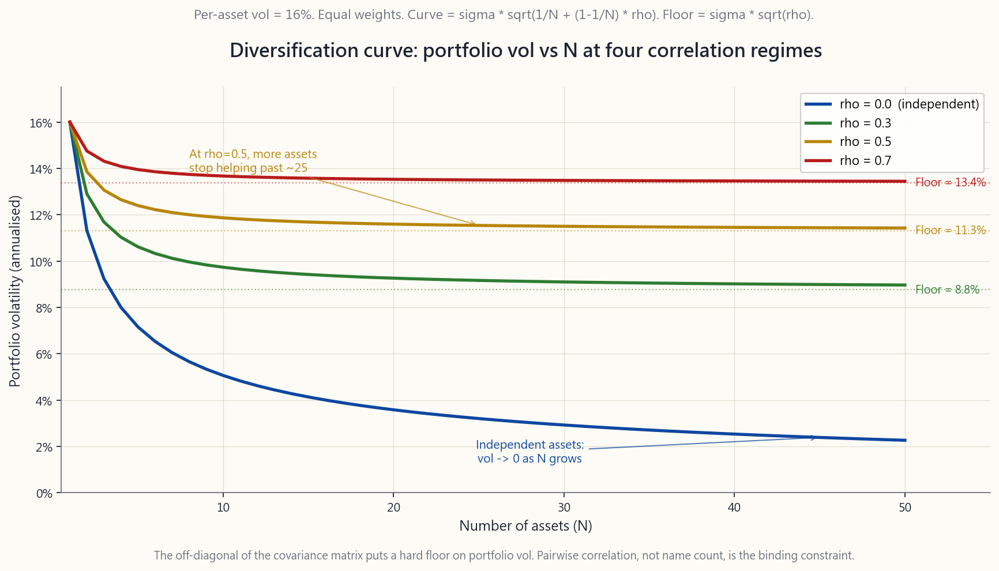
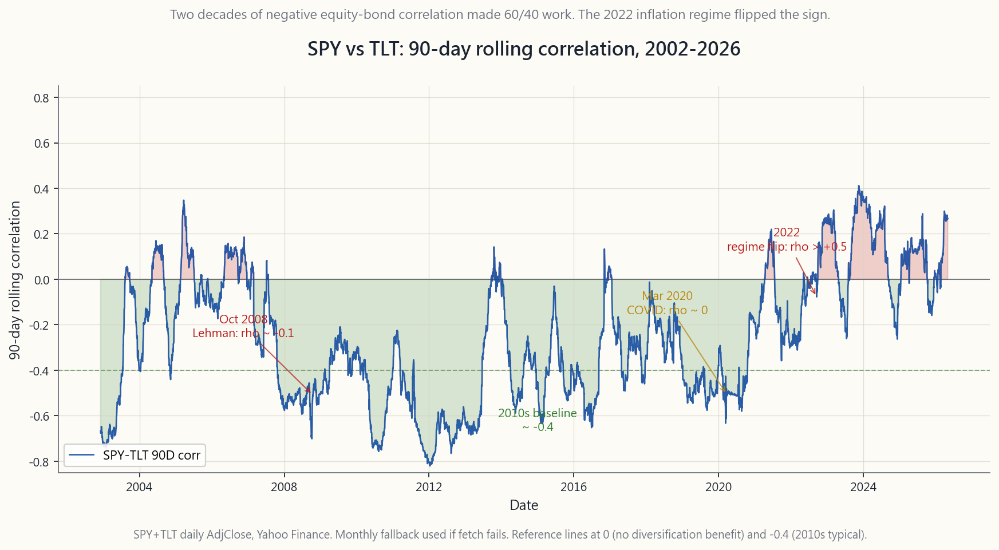

Side Lesson 19: Correlation Math — What Diversification Actually Does (and When It Stops)
1. Why This Is Important
Diversification is the closest thing to a free lunch in finance, but the lunch is mathematical and the menu has limits. Most retail investors carry a fuzzy version of "don't put all your eggs in one basket" without ever working through the actual algebra of how risk combines. This lesson fixes that. Once you can write down the portfolio-variance formula, four things stop being mysterious.
large-cap stocks held simultaneously do not deliver fifty assets' worth of risk reduction. They deliver something closer to two and a half — because the pairwise correlation between them is roughly 0.6, and that one number puts a hard floor on portfolio volatility no matter how many names you stack on top.
optimisation, risk parity, the L4 Fortress in Week 52 — all of them are, mechanically, sorting through the off-diagonal entries of the covariance matrix. If you do not have a feel for those numbers, every "optimised" allocation you read about is a black box.
uncomfortable fact in portfolio mathematics is that the diversification you measured in calm markets is not the diversification you receive in stressed ones. October 2008, March 2020, and the 2022 inflation regime are three separate demonstrations of the same arithmetic: when the market needs a diversifier, correlations of 0.2 in calm times converge toward 1.
correlation ran around -0.4 from 2000 through 2021. In 2022 it flipped to +0.3, and 60/40 lost 17% in one year. The flip was detectable in advance through rolling correlation; the math gives you a number to watch, not just a feeling.
The interactive panel lets you push two sliders — number of assets and pairwise correlation — and watch portfolio volatility, the diversification ratio, and effective N change live. The static images ground you in the historical data: the 2002-2026 SPY/TLT rolling correlation chart, and the diversification curve that shows why pairwise correlation, not asset count, is the binding constraint.
2. What You Need to Know
2.1 The Portfolio Variance Formula — sigma_p^2 = w'Sigma w
Every portfolio risk calculation in finance reduces to one identity. For a portfolio with weights $w$ on $N$ assets and a covariance matrix $\Sigma$, the portfolio variance is:
$$ \sigma_p^2 = w' \Sigma w = \sum_{i=1}^{N} \sum_{j=1}^{N} w_i w_j \sigma_i \sigma_j \rho_{ij} $$
The double sum looks intimidating but the structure is simple:
- The diagonal terms ($i = j$) give $w_i^2 \sigma_i^2$. These are
- The off-diagonal terms ($i \ne j$) give $2 w_i w_j \sigma_i
That is the whole story of diversification compressed into one sentence: **diversification benefit comes entirely from the off-diagonal terms, and it stops working when the off-diagonals are big.**
For the simplest case — $N$ equal-weighted assets, all with vol $\sigma$, all with the same pairwise correlation $\rho$ — the formula collapses to:
$$ \sigma_p = \sigma \cdot \sqrt{\frac{1}{N} + \left(1 - \frac{1}{N}\right) \rho} $$
That single equation is what the diversification-curve chart plots.

2.2 The Diversification Floor — Why More Names Stop Helping
Take the limit of the formula above as $N \to \infty$. The first term goes to zero. The second term goes to $\rho$. So:
$$ \lim_{N \to \infty} \sigma_p = \sigma \cdot \sqrt{\rho} $$
Read that out loud. **The lowest portfolio volatility you can achieve, no matter how many assets you own, is sigma times sqrt(rho).** At $\sigma = 16\%$ (typical US large-cap):
| Pairwise correlation | Floor vol (large N) |
|---|---|
| 0.0 | 0% (in theory, never in practice) |
| 0.1 | 5.1% |
| 0.3 | 8.8% |
| 0.5 | 11.3% |
| 0.7 | 13.4% |
| 0.9 | 15.2% |
US large-cap stocks have an average pairwise correlation of roughly 0.6 in calm regimes. That puts the floor at about 12.4% — and you hit 90% of the way there with about 25-30 names. Stacking names 31 through 500 buys you essentially no incremental risk reduction.
The implication for retail investors: a portfolio of "fifty different US tech stocks" is not fifty assets. It is, for risk purposes, roughly two-and-a-half assets at $\rho \approx 0.7$.
2.3 Correlation Is Not Stable — The Crisis Convergence
The deeper problem is that the $\rho$ in the formula is empirical, not constant. Pairwise correlations are themselves random variables that drift over time, and the drift is not random — it is regime- dependent in a particularly cruel way.
In normal markets, equity-equity correlations cluster around 0.4-0.6, equity-bond correlations were near -0.4 from 2000 through 2021, and international diversification gave you somewhere between 0.7 and 0.85 on developed-market correlations. In crises, all of those numbers move toward +1.
- 2008 (Lehman / GFC). US-international equity correlation, calm
- 2020 (March COVID crash). Almost everything except cash and
- 2022 (inflation regime). Long-duration Treasuries, the
The pattern has a name in academic literature: *correlation breakdown (or, more accurately, correlation convergence under stress*). The technical mechanism is that during a forced deleveraging, every leveraged book sells what is liquid, not what is expensive. That makes asset prices move together because they are all being moved by the same flow, not by their underlying fundamentals.
2.4 Rolling Correlation — The Risk Metric to Watch
Static historical correlation is a long-run average. The number that matters for portfolio construction is the current correlation, and the standard way to estimate it is with a rolling window:
$$ \rho_t^{(90)} = \mathrm{corr}\big(r_{t-90:t}^{A}, r_{t-90:t}^{B}\big) $$
A 90-day window on daily returns is the institutional default — long enough to be statistically stable, short enough to detect regime shifts within a quarter. Shorter (30-day) windows are noisier; longer (252-day) windows lag actual regime changes by months.
The SPY/TLT rolling correlation is the canonical example. From 2002 through 2021 it averaged -0.30 to -0.45, with brief excursions to zero around 2013 (taper tantrum) and 2018 (Q4 hike scare). Then in Q1 2022 it crossed zero, peaked above +0.50 in mid-2022, and has oscillated in the range -0.10 to +0.30 ever since. The Apr 2026 print is roughly +0.10 — meaningfully different from the 2010s baseline of -0.40.

The practical use of this chart: if you are running a 60/40 portfolio, the rolling correlation tells you how much diversification benefit you are currently receiving. A correlation of -0.4 means your bonds are doing real work. A correlation of +0.3 means they are mostly just adding duration risk on top of equity risk.
2.5 Monte Carlo Intuition — 10 Assets, Two Correlation Regimes
The cleanest way to feel the formula is to simulate. Take 10 assets, each with 16% annual volatility (the long-run number for US large-cap), equal weights of 10% each. Run two scenarios:
- Independent assets ($\rho = 0$): portfolio vol = $\sigma /
- Correlated assets ($\rho = 0.5$): portfolio vol = $\sigma
The 50%-correlated portfolio gets one quarter of the diversification benefit of the uncorrelated portfolio. In the limit of large N:
- Independent assets: vol $\to 0$.
- $\rho = 0.5$ assets: vol $\to \sigma \sqrt{0.5} = 11.3\%$.
If the menu is genuinely orthogonal — equities, long Treasuries, short Treasuries, gold, managed futures, options-based defensive strategies — you are using the barbell and the four-tranche framework to get correlations across the categories down toward zero, even if within each tranche the correlations are high.
2.6 Two Practical Implications
First, **the case for cross-asset-class diversification is much stronger than the case for cross-stock diversification.** Adding the 50th US large-cap stock to a 49-stock portfolio reduces vol by about 0.05 percentage points. Adding 20% in long Treasuries to a 100%-equity portfolio reduces vol by 3-4 percentage points in normal regimes. The covariance matrix says you should spend your diversification budget on asset classes, not on names.
Second, stress-test your correlations before you rely on them. The textbook rule is: assume correlations rise toward 0.7-0.8 in any serious crisis. If your portfolio's diversification only works at calm correlations, you do not have a diversified portfolio — you have a leveraged bet on the calm regime continuing. The 60/40 portfolio in 2022 lost 17% precisely because investors were running it at implied correlations of -0.4 when the true crisis correlation was +0.3.
This is the formal version of Horace's recurring point that the tail of the distribution wags the dog. Diversification that fails in the tail is not diversification — it is a fee paid in calm markets for nothing in return.
3. Common Misconceptions
Misconception 1: "Owning a lot of stocks is diversification." For a single asset class with average pairwise correlation around 0.6, you reach 90% of the achievable risk reduction with about 25 names. Beyond that the marginal benefit is rounding error. True diversification requires different asset classes, not more names.
Misconception 2: "Zero correlation means assets cancel out." Zero correlation only means the assets are linearly independent in expectation. On any individual day they can both fall, and historically gold and stocks (long-run correlation near zero) have had plenty of joint down days. Zero correlation reduces expected portfolio variance; it does not produce a hedge.
Misconception 3: "Negative correlation is always good." A perfectly negatively correlated asset would let you build a zero-volatility portfolio. Real negative-correlation assets (long Treasuries vs equities, in 2000-2021) only hold that property in specific regimes, and they generally have lower expected returns. The "hedge" is paid for in lower CAGR.
Misconception 4: "Historical correlation is a constant." Correlation is a moving statistical estimate, not a physical constant. The SPY/TLT rolling 90-day correlation has ranged from -0.7 to +0.6 just since 2002. Treating any single number as "the" correlation will mis-size your portfolio at the worst time.
Misconception 5: "International stocks add a lot of diversification." The US-international developed correlation has been around 0.85 since 2010, up from 0.70 in the 1990s. The benefit is real but small. International stocks are mostly the same asset class — global equity beta — denominated in different currencies.
Misconception 6: "If two assets are uncorrelated they have low joint risk." Uncorrelated does not mean independent. Two assets can have zero correlation and still have catastrophic joint left-tail risk — correlation only measures the linear relationship of the marginal distributions. This is one reason copula-based methods replaced linear correlation in serious risk management.
Misconception 7: "Correlation breakdown is a recent phenomenon." 1987, 1998 (LTCM), 2001, 2008, 2011 (US debt ceiling), 2020, 2022 — every serious market dislocation in the past 40 years has produced a visible spike in cross-asset correlation. The pattern is the modal behaviour of crises, not an exception.
Misconception 8: "I can diversify away crash risk." You can diversify away idiosyncratic risk — the risk that a single firm or sector blows up. You cannot diversify away systemic risk — the risk that the entire financial system deleverages at once. The covariance matrix in a crisis is dominated by a single common factor, and there is no portfolio of risky assets that escapes it. Cash, short Treasuries, and tail-hedge strategies are the only escape.
Misconception 9: "Effective N is just the number of assets." Effective N is $1 / \sum w_i^2$, which equals $N$ only for equal weights. A 50%/50% two-asset portfolio has effective N = 2. A 99%/1% portfolio has effective N = 1.02 — almost no diversification despite holding two assets. Concentration in a single position destroys the math regardless of how many names appear on the statement.
Misconception 10: "Risk parity is correlation-aware diversification." Risk parity weights $w_i \propto 1/\sigma_i$, which is correlation- ignorant. True correlation-aware portfolios use the full covariance matrix in a mean-variance optimisation. Risk parity got crushed in 2022 partly because its bond allocation assumed the historic equity-bond correlation, which had just flipped.
4. Q&A
**Q1: I own SPY plus 30 individual US large-caps. How much diversification benefit am I getting from the 30 stocks?** Almost none. Single-name US large-caps have correlation ~0.95 with SPY. The 30 stocks are essentially a noisier version of SPY at higher turnover and tax cost. If the 30 stocks have implicit beta tilts (small caps, value, momentum), those might add factor exposure, but the diversification component is rounding error. Sell the 30 names and buy more SPY, or replace them with a different asset class.
**Q2: What pairwise correlation do I need to assume for stress scenarios?** Use 0.8 across all risky assets as a working assumption. That is roughly what 2008 and 2020 produced for risky-asset pairs, and it is a realistic worst case for forward planning. If your portfolio only diversifies at $\rho = 0.4$, it is fragile. If it still helps at $\rho = 0.8$, it is robust.
Q3: How long a rolling window should I use for correlation? 90 trading days (one quarter) is the institutional default for detecting regime changes. 252 days (one year) is more stable but lags. 30 days is too noisy for portfolio construction but useful for diagnosing real-time stress events. The interactive does not let you change the window, but the chart was rendered at 90 days.
**Q4: My portfolio's actual volatility was lower than the formula predicted. Why?** Either your assets had lower correlation than you assumed, or you got lucky on the realised path. Single-period vol estimates from 5 or 10 years of monthly data have wide confidence intervals — the standard error of an annualised vol estimate from 60 monthly observations is roughly 9% relative. Your 12% predicted, 11% realised difference is not statistically meaningful.
Q5: Does adding gold reduce portfolio risk? Yes, modestly. Gold's correlation with US equities has been near zero over multi-decade windows, and slightly negative in inflation-stress regimes. A 10% gold sleeve in a 60/40 reduces vol by roughly 0.5 percentage points and improves the equity-bond crash response. It is not a hedge in the way puts are; it is a low-correlation diversifier.
Q6: Is risk parity the right way to handle correlations? Risk parity weights by inverse volatility, which is not correlation-aware. It works in regimes where correlations are stable and asset volatilities are the only thing changing. It fails when correlations move (like 2022). True correlation-aware allocation needs the full covariance matrix, which is why mean-variance and Black- Litterman frameworks dominate institutional portfolios.
**Q7: How does a 50% correlation actually feel in a 10-asset portfolio?** At 16% per-asset vol and equal weights, $\rho = 0.5$ gives portfolio vol of 11.9%. Compare to $\rho = 0$ at 5.1%. You are getting roughly 26% of the diversification benefit you would get from independent assets. If the assets were 30 instead of 10, the $\rho = 0.5$ vol falls only to 11.4% — almost no improvement past 10. This is the correlation floor in action.
Q8: Can the 2022 equity-bond correlation flip happen again? Yes — it is the historical base case in inflation regimes. Equity-bond correlation was positive on average from 1965 through 1998, then negative from 2000 through 2021. The driver is whether inflation or growth is the dominant risk: when inflation is the worry, both equities and bonds get hurt by rate hikes; when growth is the worry, bonds rally as a flight-to-quality. The post-2021 inflation regime brought back the 1965-98 behaviour.
**Q9: What's the right number of asset classes for a retail portfolio?** Five is enough: US equities, international equities, US Treasuries (short and long together count as one), gold or commodities, and one defensive overlay (managed futures, tail hedging, cash). Each additional class adds vanishing benefit, each requires monitoring and rebalancing, and the four-tranche-plus-cash framework is basically this list.
Q10: How do I actually compute portfolio variance from real data?
Take monthly returns for each asset over 5-10 years. Compute the
sample covariance matrix (pandas .cov() does it). Multiply
$w' \Sigma w$ for your weight vector. Take the square root. Annualise
by multiplying by $\sqrt{12}$. The single biggest pitfall is using
arithmetic means and arithmetic vols on monthly data and then
annualising — that overstates vol by ignoring serial correlation.
Better to compute vol on monthly log returns and annualise.
附加課程 19：相關性數學——分散投資的真正效果（及其局限）
1. 為何重要
分散投資是金融領域最接近「免費午餐」的概念，但這頓午餐是數學性的，菜單也有其限制。大多數散戶投資者只是隱約記住「不要把所有雞蛋放在同一個籃子裡」，卻從未真正推算過風險合併的實際代數運算。本課程將解決這個問題。一旦你能寫出投資組合方差公式，以下四件事就不再神秘。
互動面板讓你操控兩個滑桿——資產數量與配對相關性——並實時觀察投資組合波動性、分散比率及有效N值的變化。靜態圖像則以歷史數據作為參考依據：2002年至2026年的SPY/TLT滾動相關性圖表，以及分散曲線，展示為何配對相關性而非資產數量，才是真正的制約因素。
2. 你需要掌握的知識
2.1 投資組合方差公式——σ_p² = w'Σw
金融領域中每一個投資組合風險計算，最終都歸結為一個恆等式。對於在$N$個資產上持有權重$w$、協方差矩陣為$\Sigma$的投資組合，其投資組合方差為：
$$ \sigma_p^2 = w' \Sigma w = \sum_{i=1}^{N} \sum_{j=1}^{N} w_i w_j \sigma_i \sigma_j \rho_{ij} $$
雙重求和看似複雜，但結構其實簡單：
- 對角線項（$i = j$）給出$w_i^2 \sigma_i^2$。這些是每個資產自身波動性的貢獻，隨著你將權重分散至更多資產而縮小——對於$N$個等權重、波動性為$\sigma$的資產，對角線貢獻為$\sigma^2 / N$。
- 非對角線項（$i \ne j$）給出$2 w_i w_j \sigma_i \sigma_j \rho_{ij}$。這些項共有$N(N-1)$個，除非相關性$\rho_{ij}$很小，否則它們不會隨$N$的增加而縮小。
在最簡單的情況下——$N$個等權重資產，所有資產的波動性均為$\sigma$，所有配對相關性均為$\rho$——公式簡化為：
$$ \sigma_p = \sigma \cdot \sqrt{\frac{1}{N} + \left(1 - \frac{1}{N}\right) \rho} $$
分散曲線圖表所繪製的，正是這個單一方程式。
2.2 分散下限——為何增加更多名字終究無效
取上述公式在$N \to \infty$時的極限。第一項趨近於零，第二項趨近於$\rho$。因此：
$$ \lim_{N \to \infty} \sigma_p = \sigma \cdot \sqrt{\rho} $$
大聲朗讀這句話。無論你持有多少資產，你所能達到的最低投資組合波動性，是sigma乘以rho的平方根。 以$\sigma = 16\%$（美國大型股的典型值）計算：
| 配對相關性 | 下限波動性（大N時） |
|---|---|
| 0.0 | 0%（理論上可達，實際上從未實現） |
| 0.1 | 5.1% |
| 0.3 | 8.8% |
| 0.5 | 11.3% |
| 0.7 | 13.4% |
| 0.9 | 15.2% |
美國大型股在平靜市場環境下的平均配對相關性約為0.6，這將下限設在約12.4%——而你只需持有約25至30個名字便已達到90%的效果。將第31至500個名字疊加其上，基本上不會帶來任何額外的風險降低。
對散戶投資者而言，這意味著：「五十隻不同的美國科技股」投資組合並非五十個資產。在風險層面，它大約相當於兩隻半個資產，配對相關性約為0.7。
2.3 相關性並不穩定——危機中的收斂現象
更深層的問題在於，公式中的$\rho$是實測值，而非常數。配對相關性本身是隨時間漂移的隨機變量，而這種漂移並非隨機——它以一種特別殘酷的方式依賴市場環境。
在正常市場中，股票間的相關性集中在0.4至0.6之間，股票與債券的相關性從2000年到2021年接近-0.4，國際分散投資在已發展市場的相關性介乎0.7至0.85之間。在危機中，所有這些數字都會向+1靠攏。
- 2008年（雷曼/全球金融危機）。 美國與國際股票相關性，平靜基準約為0.80，在2008年10月峰值達到0.95。投資級信貸與股票的平靜相關性約為0.20，在雷曼倒閉後四週內升至0.85。
- 2020年（3月新冠疫情崩盤）。 除現金和長期國債外，幾乎所有資產都同步交易。標普500與新興市場股票相關性，通常為0.7，在五週的拋售中升至0.97。甚至黃金也在最惡劣的一天（3月16日）短暫隨股票下跌，因為追繳保證金迫使投資者變賣流動性資產。
- 2022年（通脹環境）。 長期國債——過去二十年的教科書級股票對沖工具——自1969年以來首次與股票同步下跌。90天SPY/TLT滾動相關性在八週內從-0.40翻轉至+0.30，並在年底前維持正值。
2.4 滾動相關性——值得關注的風險指標
靜態歷史相關性是長期平均值。對投資組合構建而言真正重要的，是當前相關性，而估算它的標準方法是滾動窗口：
$$ \rho_t^{(90)} = \mathrm{corr}\big(r_{t-90:t}^{A}, r_{t-90:t}^{B}\big) $$
以日回報計算的90天窗口是機構默認標準——時間長度足以保持統計穩定性，又足夠短以在一個季度內偵測環境轉變。較短的（30天）窗口噪音較大；較長的（252天）窗口則在實際環境轉變後滯後數月。
SPY/TLT滾動相關性是最典型的例子。從2002年到2021年，其平均值介乎-0.30至-0.45之間，僅在2013年（縮減恐慌）和2018年（第四季加息恐慌）附近短暫觸及零值。然後在2022年第一季度它穿越零值，在2022年中峰值超過+0.50，此後在-0.10至+0.30的範圍內震蕩。2026年4月的讀數約為+0.10——與2010年代-0.40的基準明顯不同。
這張圖表的實際用途：如果你正在管理一個60/40投資組合，滾動相關性告訴你當前實際獲得了多少分散投資效益。相關性為-0.4意味著你的債券在切實發揮作用。相關性為+0.3意味著它們主要是在股票風險之上疊加存續期風險。
2.5 蒙地卡羅直覺——10個資產，兩種相關性環境
感受這個公式最直接的方法是模擬。取10個資產，每個資產年化波動性為16%（美國大型股的長期數值），等權重各佔10%。運行兩個情景：
- 獨立資產（$\rho = 0$）：投資組合波動性 = $\sigma / \sqrt{N} = 16\% / \sqrt{10} \approx 5.1\%$。風險降低3倍。
- 相關資產（$\rho = 0.5$）：投資組合波動性 = $\sigma \sqrt{1/10 + 0.9 \cdot 0.5} = 16\% \cdot \sqrt{0.55} \approx 11.9\%$。風險降低1.3倍。
- 獨立資產：波動性 $\to 0$。
- $\rho = 0.5$ 資產：波動性 $\to \sigma \sqrt{0.5} = 11.3\%$。
如果菜單是真正正交的資產——股票、長期國債、短期國債、黃金、管理期貨、期權型防禦策略——你就是在利用啞鈴策略和四檔框架，將各類別之間的相關性降至接近零，即使每個檔次內部的相關性仍然偏高。
2.6 兩個實際啟示
第一，跨資產類別分散投資的理由，遠比跨股票分散投資的理由充分。 在49隻股票的投資組合中增加第50隻美國大型股，可將波動性降低約0.05個百分點。在100%股票的投資組合中加入20%長期國債，在正常環境下可將波動性降低3至4個百分點。協方差矩陣告訴你：應將分散預算花在資產類別上，而非名字上。
第二，在依賴相關性之前，先進行壓力測試。 教科書的規則是：假設在任何嚴重危機中，相關性會升至0.7至0.8。如果你的投資組合的分散效果只在平靜的相關性下有效，你持有的並非一個分散化的投資組合——而是一個押注於平靜環境持續的槓桿賭注。2022年的60/40投資組合虧損17%，正是因為投資者在隱含相關性為-0.4時持有它，而當時實際的危機相關性為+0.3。
這是陳馬反覆強調的觀點的正式表述：分佈的尾部才是真正主宰一切的力量。在尾部失效的分散投資並非真正的分散投資——它只是在平靜市場中支付費用，在危機時卻一無所獲。
3. 常見誤解
誤解一：「持有大量股票就是分散投資。」 對於平均配對相關性約為0.6的單一資產類別，你只需約25個名字便能達到可實現風險降幅的90%。超出此範圍後，邊際效益微乎其微。真正的分散投資需要不同的資產類別，而非更多的名字。
誤解二：「零相關性意味著資產互相抵消。」 零相關性只意味著資產在期望值上是線性獨立的。在任何個別日子，它們都可能同時下跌，歷史上黃金與股票（長期相關性接近零）也有大量共同下跌的日子。零相關性降低預期投資組合方差，但並不提供對沖效果。
誤解三：「負相關性永遠是好事。」 完全負相關的資產理論上可以構建零波動性的投資組合。真實的負相關資產（2000至2021年間的長期國債對比股票）只在特定環境下具備這種特性，且它們通常具有較低的預期回報。「對沖」是以較低的複合年增長率換來的。
誤解四：「歷史相關性是一個常數。」 相關性是一個會移動的統計估計值，而非物理常數。僅自2002年以來，SPY/TLT的90天滾動相關性便已從-0.7到+0.6之間大幅波動。將任何單一數字視為「唯一正確」的相關性，將在最關鍵時刻造成投資組合規模錯估。
誤解五：「國際股票能提供大量分散效益。」 自2010年以來，美國與國際已發展市場的相關性一直在0.85左右，高於1990年代的0.70。效益是真實存在的，但微小。國際股票大體上屬於同一資產類別——以不同貨幣計價的全球股票貝塔。
誤解六：「兩個資產不相關就代表它們聯合風險低。」 不相關不等於獨立。兩個資產可以具有零相關性，但仍具有災難性的聯合左尾風險——相關性只衡量邊際分佈之間的線性關係。這正是為何基於聯結函數（copula）的方法在嚴肅的風險管理中取代了線性相關性。
誤解七：「相關性崩潰是近期才有的現象。」 1987年、1998年（長期資本管理公司）、2001年、2008年、2011年（美國債務上限）、2020年、2022年——過去40年每一次嚴重的市場動盪，都出現了跨資產相關性的明顯急升。這種模式是危機的典型行為，而非例外。
誤解八：「我可以通過分散投資消除崩盤風險。」 你可以分散掉個別風險——即單一公司或板塊崩潰的風險。但你無法分散掉系統性風險——即整個金融體系同時去槓桿的風險。危機中的協方差矩陣由單一共同因子主導，而沒有任何風險資產組合能夠逃脫。現金、短期國債和尾部對沖策略是唯一的出路。
誤解九：「有效N就是資產數量。」 有效N是$1 / \sum w_i^2$，只有在等權重時才等於$N$。50%/50%的兩資產投資組合有效N為2。99%/1%的投資組合有效N為1.02——儘管持有兩個資產，但幾乎沒有任何分散效果。集中於單一倉位會破壞所有數學基礎，無論報告上列出多少個名字。
誤解十：「風險平價是具備相關性意識的分散投資。」 風險平價按$w_i \propto 1/\sigma_i$分配權重，這是忽略相關性的做法。真正具備相關性意識的投資組合，需要在均值-方差優化中使用完整的協方差矩陣。風險平價在2022年遭受重創，部分原因是其債券配置建基於歷史股債相關性，而該相關性已剛剛翻轉。
4. 問答
問題一：我持有SPY加上30隻美國大型個股。這30隻股票為我帶來了多少分散效益？ 幾乎沒有。美國大型個股與SPY的相關性約為0.95。這30隻股票本質上是SPY的一個噪音更多、換手率更高、稅務成本更高的版本。如果這30隻股票具有隱性的貝塔傾斜（細價股、價值股、動量因子），它們或許能帶來因子敞口，但分散效益部分幾乎可以忽略不計。賣出這30個名字，買入更多SPY，或者用不同的資產類別替代它們。
問題二：在壓力情景中，我應假設多高的配對相關性？ 將0.8作為所有風險資產的工作假設。這大致是2008年和2020年風險資產對之間的實測水平，也是前瞻性規劃的實際最壞情況。如果你的投資組合只在$\rho = 0.4$時有效，那它是脆弱的。如果在$\rho = 0.8$時仍然有效，那它是穩健的。
問題三：滾動相關性應使用多長的窗口？ 90個交易日（即一個季度）是偵測環境轉變的機構默認標準。252天（即一年）更穩定，但存在滯後。30天對投資組合構建來說噪音過大，但對診斷實時壓力事件有用。互動面板不允許更改窗口，但圖表是以90天渲染的。
問題四：我的投資組合實際波動性低於公式預測。為什麼？ 要麼你的資產相關性低於你的假設，要麼你在已實現路徑上運氣較好。從5至10年的月度數據中得出的單期波動性估計值，置信區間很寬——從60個月度觀測值中得出的年化波動性估計值，相對標準誤差約為9%。你預測12%、實際11%的差異在統計上並不顯著。
問題五：加入黃金能降低投資組合風險嗎？ 是的，效果溫和。黃金與美國股票在多十年窗口上的相關性接近零，在通脹壓力環境下略呈負相關。在60/40中加入10%的黃金配置，大約可將波動性降低0.5個百分點，並改善股債崩盤時的表現。它不像期權那樣是一種對沖工具；它是一種低相關性的分散工具。
問題六：風險平價是處理相關性的正確方式嗎？ 風險平價按逆波動性分配權重，這並非具備相關性意識的做法。它在相關性穩定、只有資產波動性發生變化的環境下有效。當相關性移動時（如2022年），它便失效。真正具備相關性意識的配置，需要在均值-方差和Black-Litterman框架中使用完整的協方差矩陣，這也是為何機構投資組合以這些框架為主導。
問題七：在10個資產的投資組合中，50%的相關性實際感受如何？ 在每個資產波動性為16%、等權重的情況下，$\rho = 0.5$時投資組合波動性為11.9%。對比$\rho = 0$時的5.1%。你獲得的分散效益大約是獨立資產情況下的26%。如果資產從10個增加到30個，$\rho = 0.5$時的波動性僅從11.9%降至11.4%——增加四十個額外資產只帶來半個百分點的波動性降幅。這就是相關性下限在發揮作用。
問題八：2022年的股債相關性翻轉還會再次發生嗎？ 是的——這在通脹環境中是歷史上的基本情景。股債相關性從1965年到1998年平均為正值，然後從2000年到2021年變為負值。驅動因素在於通脹還是增長才是主要風險：當通脹是主要憂慮時，股票和債券都受加息衝擊；當增長是主要憂慮時，債券作為避險資產而上漲。2021年後的通脹環境重現了1965至1998年的行為模式。
問題九：散戶投資組合中合適的資產類別數量是多少？ 五類已經足夠：美國股票、國際股票、美國國債（短期和長期合計算一類）、黃金或商品，以及一種防禦性工具（管理期貨、尾部對沖或現金）。每增加一個類別帶來的邊際效益遞減，且每個類別都需要監控和再平衡，而四檔加現金框架基本上就是這個清單。
問題十：我如何從真實數據中計算投資組合方差？
取每個資產過去5至10年的月度回報。計算樣本協方差矩陣（pandas的.cov()可直接完成）。用你的權重向量計算$w' \Sigma w$。取平方根。乘以$\sqrt{12}$進行年化。最大的陷阱是對月度數據使用算術均值和算術波動性後再進行年化——這會因忽略序列相關性而高估波動性。更好的做法是計算月度對數回報的波動性，再進行年化。
補充課 19：相關性數學——分散投資的真正作用（以及何時失效）
1. 為什麼這很重要
分散投資是金融領域最接近免費午餐的概念，但這頓午餐是數學性的，而菜單也有其限制。多數散戶投資人對「不要把所有雞蛋放在同一個籃子裡」只有模糊的概念，從未真正推導過風險如何在代數上合併。本課補足這個缺口。一旦你能寫出投資組合變異數公式，以下四件事就不再神秘。
互動面板讓你拖動兩個滑桿——資產數量與兩兩相關性——並即時觀察投資組合波動性、分散化比率與有效資產數的變化。靜態圖表則以歷史數據為你紮根：2002 至 2026 年的 SPY/TLT 滾動相關性圖，以及分散化曲線——該曲線顯示為何兩兩相關性（而非資產數量）才是真正的約束條件。
2. 你需要掌握的知識
2.1 投資組合變異數公式——sigma_p^2 = w'Sigma w
金融中所有的投資組合風險計算，最終都可歸結為一個恆等式。對於一個持有 $N$ 種資產、權重向量為 $w$、共變異數矩陣為 $\Sigma$ 的投資組合，其投資組合變異數為：
$$ \sigma_p^2 = w' \Sigma w = \sum_{i=1}^{N} \sum_{j=1}^{N} w_i w_j \sigma_i \sigma_j \rho_{ij} $$
雙重加總看似複雜，但結構其實簡單：
- 對角線項（$i = j$）給出 $w_i^2 \sigma_i^2$。這些是每種資產自身波動性的貢獻，隨著你將權重分散到更多資產而縮小——對於 $N$ 個等權資產，各自波動性為 $\sigma$，對角線貢獻為 $\sigma^2 / N$。
- 非對角線項（$i \ne j$）給出 $2 w_i w_j \sigma_i \sigma_j \rho_{ij}$。這類項共有 $N(N-1)$ 個，除非相關性 $\rho_{ij}$ 夠小，否則它們不會隨 $N$ 縮小。
對於最簡單的情況——$N$ 個等權資產，各自波動性為 $\sigma$，所有兩兩相關性均為 $\rho$——公式化簡為：
$$ \sigma_p = \sigma \cdot \sqrt{\frac{1}{N} + \left(1 - \frac{1}{N}\right) \rho} $$
這個方程式就是分散化曲線圖所繪製的內容。
2.2 分散化底板——為何增加更多名字不再有用
對上述公式取 $N \to \infty$ 的極限。第一項趨近於零，第二項趨近於 $\rho$。因此：
$$ \lim_{N \to \infty} \sigma_p = \sigma \cdot \sqrt{\rho} $$
大聲念出來：無論你持有多少資產，所能達到的最低投資組合波動性，就是 sigma 乘以 sqrt(rho)。 在 $\sigma = 16\%$（美國大型股的典型值）時：
| 兩兩相關性 | 底板波動性（大 N 時） |
|---|---|
| 0.0 | 0%（理論上如此，實際上永遠達不到） |
| 0.1 | 5.1% |
| 0.3 | 8.8% |
| 0.5 | 11.3% |
| 0.7 | 13.4% |
| 0.9 | 15.2% |
美國大型股在平靜環境下的平均兩兩相關性約為 0.6，這將底板設在約 12.4%——而你大約在持有 25 至 30 個名字時就達到了 90%。繼續疊加第 31 到第 500 個名字，幾乎買不到任何額外的風險降低。
對散戶投資人的意涵是：「五十檔不同的美國科技股」投資組合，並不是五十種資產。就風險而言，它大約只等同於兩點五種資產（$\rho \approx 0.7$）。
2.3 相關性並不穩定——危機收斂
更深層的問題在於，公式中的 $\rho$ 是經驗性的，而非常數。兩兩相關性本身是隨時間漂移的隨機變數，而這種漂移並非隨機——它以一種特別殘酷的方式依賴市場環境。
在正常市場中，股票間相關性聚集在 0.4 至 0.6，從 2000 年到 2021 年股票與債券的相關性接近 -0.4，國際分散投資在已開發市場相關性方面提供約 0.7 至 0.85 的數值。而在危機中，所有這些數字都向 +1 移動。
- 2008 年（雷曼／全球金融危機）。 美國與國際股票相關性，平靜基線約 0.80，在 2008 年 10 月高峰達 0.95。投資等級信用與股票的平靜相關性約 0.20，在雷曼事件後的四週內升至 0.85。
- 2020 年（3 月 COVID 崩盤）。 除現金與長期公債以外，幾乎所有資產都同步波動。標普 500 與新興市場股票相關性，正常情況下為 0.7，在五週拋售期間達到 0.97。甚至黃金也在最慘烈的一天（3 月 16 日）短暫隨股票下跌，原因是追繳保證金迫使投資人出售流動性資產。
- 2022 年（通膨環境）。 長天期公債——過去二十年的教科書式股票避險工具——自 1969 年以來首次與股票同步下跌。SPY/TLT 的 90 日滾動相關性在八週內從 -0.40 翻轉至 +0.30，並在年底前維持正值。
2.4 滾動相關性——值得盯住的風險指標
靜態歷史相關性是長期平均值。對投資組合建構而言真正重要的，是當前相關性，而估計它的標準方法是使用滾動窗口：
$$ \rho_t^{(90)} = \mathrm{corr}\big(r_{t-90:t}^{A}, r_{t-90:t}^{B}\big) $$
以日報酬率計算的 90 日窗口是機構預設標準——長到足以具有統計穩定性，短到能在一個季度內偵測出環境轉變。較短的 30 日窗口雜訊過多；較長的 252 日窗口則會滯後實際環境變化數月。
SPY/TLT 滾動相關性是典型案例。從 2002 年到 2021 年，平均值在 -0.30 至 -0.45，在 2013 年（縮減恐慌）和 2018 年（第四季升息恐慌）期間曾短暫接近零。隨後在 2022 年第一季穿越零軸，在 2022 年中高峰超過 +0.50，此後在 -0.10 至 +0.30 的區間震盪。2026 年 4 月的讀數約為 +0.10——與 2010 年代 -0.40 的基準有顯著差異。
這張圖的實際用途是：如果你持有 60/40 投資組合，滾動相關性告訴你目前實際獲得多少分散化效益。相關性為 -0.4 意味著你的債券正在發揮實質作用；相關性為 +0.3 意味著債券大致上只是在股票風險之上疊加存續期間風險。
2.5 蒙地卡羅直覺——10 種資產、兩種相關性環境
感受這個公式最直接的方法是模擬。取 10 種資產，每種年波動性為 16%（美國大型股的長期數值），各自持有 10% 的等權重。執行兩個情境：
- 獨立資產（$\rho = 0$）：投資組合波動性 = $\sigma / \sqrt{N} = 16\% / \sqrt{10} \approx 5.1\%$。降低了 3 倍。
- 相關資產（$\rho = 0.5$）：投資組合波動性 = $\sigma \sqrt{1/10 + 0.9 \cdot 0.5} = 16\% \cdot \sqrt{0.55} \approx 11.9\%$。降低了 1.3 倍。
- 獨立資產：波動性 $\to 0$。
- $\rho = 0.5$ 資產：波動性 $\to \sigma \sqrt{0.5} = 11.3\%$。
如果菜單是真正相互正交的資產——股票、長期公債、短期公債、黃金、管理期貨、選擇權型防禦策略——那麼你是在運用槓鈴策略與四壘框架，將各類別間的相關性壓低至接近零，即使每個壘內部的相關性偏高。
2.6 兩個實務意涵
第一，跨資產類別分散投資的理由，遠強於跨個股分散投資的理由。 在 49 檔股票的投資組合中加入第 50 檔美國大型股，波動性約降低 0.05 個百分點。在 100% 股票的投資組合中加入 20% 的長期公債，在正常環境下可降低波動性 3 至 4 個百分點。共變異數矩陣告訴你：把分散投資的預算花在資產類別上，而非花在名字上。
第二，在依賴相關性之前，先做壓力測試。 教科書準則是：假設在任何嚴重危機中，相關性都會上升至 0.7 至 0.8。如果你的投資組合的分散效果只在平靜相關性下奏效，你持有的並非分散投資組合——而是對平靜環境持續下去的槓桿押注。2022 年 60/40 投資組合虧損 17%，正是因為投資人以 -0.4 的隱含相關性運作，而真實的危機相關性卻是 +0.3。
這是陳馬反覆強調的「尾部分布搖動狗」的正式版本。在尾部失效的分散化，不是分散投資——而是在平靜市場中支付費用，危機時卻一無所獲。
3. 常見迷思
迷思一：「持有很多股票就是分散投資。」 對於平均兩兩相關性約 0.6 的單一資產類別，持有約 25 個名字就能達到 90% 可實現的風險降低。超過此數，邊際效益幾乎等同於捨入誤差。真正的分散投資需要不同的資產類別，而非更多的名字。
迷思二：「零相關性意味著資產相互抵消。」 零相關性只表示資產在期望值上是線性獨立的。在任何單一日子，兩者都可能同步下跌，而歷史上黃金與股票（長期相關性接近零）確實有許多共同下跌的日子。零相關性降低的是期望投資組合變異數，並非製造避險效果。
迷思三：「負相關性永遠是好事。」 完全負相關的資產理論上可以建構出零波動性的投資組合。真實的負相關資產（2000 至 2021 年的長期公債對股票）只在特定環境下維持這種特性，而且它們通常有較低的預期報酬。「避險」是以較低的年複合成長率換來的。
迷思四：「歷史相關性是一個常數。」 相關性是動態的統計估計值，而非物理常數。僅自 2002 年以來，SPY/TLT 滾動 90 日相關性的區間就從 -0.7 到 +0.6。把任何單一數字當作「該」相關性，會讓你在最糟糕的時刻配置失準。
迷思五：「國際股票能增加大量分散效果。」 自 2010 年以來，美國與國際已開發市場的相關性約為 0.85，高於 1990 年代的 0.70。效益是存在的，但很小。國際股票基本上是同一種資產類別——全球股票貝塔——只是計價貨幣不同。
迷思六：「兩種資產不相關，就代表共同風險很低。」 不相關不等於獨立。兩種資產可以有零相關性，但同時存在災難性的共同左尾風險——相關性只衡量邊際分布之間的線性關係。這是為何嚴肅的風險管理已用聯結函數方法取代線性相關性的原因之一。
迷思七：「相關性崩解是近年才有的現象。」 1987 年、1998 年（長期資本管理公司）、2001 年、2008 年、2011 年（美國債務上限）、2020 年、2022 年——過去四十年每一次嚴重的市場失序，都產生了明顯的跨資產相關性飆升。這個模式是危機的典型行為，而非例外。
迷思八：「我可以透過分散投資消除崩盤風險。」 你可以分散掉非系統性風險——單一公司或產業爆雷的風險。你無法分散掉系統性風險——整個金融體系同時去槓桿化的風險。危機中的共變異數矩陣由單一共同因子主導，沒有任何風險性資產組合能夠逃脫。現金、短期公債與尾部避險策略，是唯一的出路。
迷思九：「有效資產數就是資產的數量。」 有效資產數為 $1 / \sum w_i^2$，只有在等權重時才等於 $N$。50%/50% 的兩資產投資組合，有效資產數為 2。99%/1% 的投資組合，有效資產數為 1.02——儘管帳戶上持有兩種資產，幾乎沒有任何分散效果。無論報告上出現多少名字，在單一部位的高度集中都會破壞這個數學。
迷思十：「風險平價是具相關性意識的分散投資。」 風險平價以 $w_i \propto 1/\sigma_i$ 加權，這是忽略相關性的。真正具有相關性意識的投資組合，使用完整的共變異數矩陣進行均值-變異數最適化。風險平價在 2022 年損失慘重，部分原因正是其債券配置假設了歷史上的股債相關性，而這個相關性恰在當時翻轉。
4. 問答
Q1：我持有 SPY 加上 30 檔美國大型個股。這 30 檔股票為我帶來多少分散效益？ 幾乎沒有。美國大型個股與 SPY 的相關性約為 0.95。這 30 檔股票本質上只是一個更嘈雜的 SPY 版本，但需要付出更高的周轉成本與稅務成本。如果這 30 檔股票有隱含的貝塔傾斜（小型股、價值股、動能），那些可能增加因子暴露，但分散化成分是捨入誤差。賣掉這 30 個名字，買進更多 SPY，或者用不同的資產類別取代它們。
Q2：壓力情境下，我應該假設多少兩兩相關性？ 以所有風險性資產的相關性 0.8 作為工作假設。這大致是 2008 年和 2020 年對風險資產配對所產生的數值，也是前瞻規劃的實際最壞情境。如果你的投資組合只在 $\rho = 0.4$ 時才能分散，它就是脆弱的。如果在 $\rho = 0.8$ 下依然有效，它才是穩健的。
Q3：滾動相關性應使用多長的窗口？ 90 個交易日（一個季度）是機構在偵測環境轉變時的預設值。252 天（一年）較為穩定但滯後。30 天對投資組合建構而言過於嘈雜，但適合即時壓力事件的診斷。互動工具不提供窗口調整，但圖表是以 90 日窗口渲染的。
Q4：我的投資組合實際波動性低於公式預測。為什麼？ 要麼你假設的相關性高於資產實際相關性，要麼你在實現路徑上運氣較好。以 60 個月度觀測值估計的年化波動性，具有很寬的信賴區間——60 個月度樣本的年化波動性估計值，相對標準誤約為 9%。你預測 12%、實現 11% 的差異，在統計上並不顯著。
Q5：加入黃金能降低投資組合風險嗎？ 可以，但幅度有限。黃金與美國股票的相關性在數十年窗口下接近零，在通膨壓力環境下略為負值。在 60/40 中加入 10% 的黃金部位，波動性約降低 0.5 個百分點，並改善股債崩盤時的反應。它不像買權那樣是嚴格意義上的避險工具；它是一個低相關性的分散工具。
Q6：風險平價是處理相關性的正確方式嗎？ 風險平價按波動性倒數加權，這並非具相關性意識的做法。它在相關性穩定、資產波動性是唯一變動因素的環境下有效。當相關性移動時（如 2022 年），它就失效了。真正具相關性意識的配置需要完整的共變異數矩陣，這也是為何均值-變異數與 Black-Litterman 框架主導機構投資組合的原因。
Q7：在 10 資產投資組合中，50% 的相關性實際感受如何？ 在 16% 的單資產波動性與等權重下，$\rho = 0.5$ 產生 11.9% 的投資組合波動性。相較之下，$\rho = 0$ 時為 5.1%。你獲得的分散效益大約只有獨立資產情況的 26%。如果資產從 10 增加到 30，保持 $\rho = 0.5$，波動性只從 11.9% 降至約 11.4%——多出的四十種資產只買到了半個百分點的波動性降低。這就是相關性底板在實際中的運作方式。
Q8：2022 年的股債相關性翻轉還會再發生嗎？ 會——這是通膨環境下的歷史基本情境。股債相關性在 1965 至 1998 年間平均為正，在 2000 至 2021 年間為負。驅動因子是通膨還是成長才是主要風險：當通膨是主要擔憂時，升息同時傷害股票與債券；當成長是主要擔憂時，債券因資金逃往安全資產而上漲。2021 年後的通膨環境帶回了 1965 至 1998 年的行為模式。
Q9：散戶投資組合中，資產類別的「正確數量」是多少？ 五種就夠了：美國股票、國際股票、美國公債（短期與長期合計為一類）、黃金或原物料，以及一種防禦型覆蓋策略（管理期貨、尾部避險或現金）。每增加一類的邊際效益遞減，且每類都需要監控與再平衡，四壘加現金的框架基本上就是這份清單。
Q10：如何從真實數據計算投資組合變異數？
取每種資產 5 至 10 年的月報酬率。計算樣本共變異數矩陣（pandas 的 .cov() 可直接完成）。對你的權重向量計算 $w' \Sigma w$。取平方根，再乘以 $\sqrt{12}$ 進行年化。最常見的陷阱是對月度數據使用算術平均與算術波動性後再年化——這因忽略序列相關性而高估了波動性。更好的做法是對月度對數報酬率計算波動性後再年化。
补充课19：相关性数学——分散投资的真实效果（以及何时失效）
1. 为何重要
分散投资是金融领域最接近"免费午餐"的事物，但这顿午餐是数学上的，且菜单有其局限。大多数散户投资者对"不要把所有鸡蛋放在一个篮子里"有一个模糊的认知，却从未真正推导过风险合并的实际代数原理。本课将弥补这一缺口。一旦你能写出投资组合方差公式，以下四件事就不再神秘。
交互面板允许你推动两个滑块——资产数量和两两相关性——实时观察投资组合波动性、分散化比率和有效N的变化。静态图表则将你锚定在历史数据中：2002年至2026年的SPY/TLT滚动相关性图表，以及分散化曲线，清晰展示为何两两相关性——而非资产数量——才是约束性瓶颈。
2. 必备知识
2.1 投资组合方差公式——σ_p² = w'Σw
金融中的每一个风险计算，最终都可以归结为同一个恒等式。对于一个在N个资产上配置权重w、协方差矩阵为Σ的投资组合，其方差为：
$$ \sigma_p^2 = w' \Sigma w = \sum_{i=1}^{N} \sum_{j=1}^{N} w_i w_j \sigma_i \sigma_j \rho_{ij} $$
双重求和看似复杂，但结构简单：
- 对角线项（$i = j$）给出$w_i^2 \sigma_i^2$。这是每个资产自身波动性的贡献，随着权重分散到更多资产而缩减——对于N个等权重、波动性为σ的资产，对角线贡献为$\sigma^2 / N$。
- 非对角线项（$i \ne j$）给出$2 w_i w_j \sigma_i \sigma_j \rho_{ij}$。共有$N(N-1)$项，除非相关性$\rho_{ij}$较小，否则不会随N缩减。
对于最简单的情形——N个等权重资产，波动性均为σ，两两相关性均为ρ——公式简化为：
$$ \sigma_p = \sigma \cdot \sqrt{\frac{1}{N} + \left(1 - \frac{1}{N}\right) \rho} $$
分散化曲线图所绘制的，正是这一方程。
2.2 分散化底线——为何增加名称终将失效
将上述公式取N → ∞的极限。第一项趋于零，第二项趋于ρ，因此：
$$ \lim_{N \to \infty} \sigma_p = \sigma \cdot \sqrt{\rho} $$
大声念出来：无论持有多少资产，你所能实现的最低投资组合波动性，是σ乘以ρ的平方根。 在$\sigma = 16\%$（美国大盘股的典型值）时：
| 两两相关性 | 底线波动性（N趋于无穷） |
|---|---|
| 0.0 | 0%（理论值，实践中不存在） |
| 0.1 | 5.1% |
| 0.3 | 8.8% |
| 0.5 | 11.3% |
| 0.7 | 13.4% |
| 0.9 | 15.2% |
美国大盘股在平静格局下的平均两两相关性约为0.6，对应底线约为12.4%——而持有约25至30只股票便可达到这一底线的90%。将名称从第31只叠加到第500只，实质上不会带来任何增量风险分散。
对散户投资者的含义：一个由"五十只不同美国科技股"构成的投资组合，并不等于五十个资产。从风险角度看，在$\rho \approx 0.7$时，它仅相当于约两点五个资产。
2.3 相关性并不稳定——危机收敛现象
更深层的问题在于：公式中的ρ是实证估计值，而非常数。两两相关性本身就是随时间漂移的随机变量，而这种漂移并非随机——它以一种格外残酷的方式依赖于市场格局。
在正常市场中，股票间相关性集中在0.4至0.6，2000年至2021年间股债相关性约为-0.4，国际分散投资在发达市场股票间的相关性约为0.7至0.85。而在危机中，所有这些数字都会向+1移动。
- 2008年（雷曼/全球金融危机）。 美国与国际股票的相关性，平静期基准约为0.80，在2008年10月峰值达到0.95。投资级信用债与股票的平静期相关性约为0.20，在雷曼倒闭后四周内飙升至0.85。
- 2020年（3月新冠疫情崩盘）。 除现金和长期国债外，几乎所有资产都同步运动。标普500与新兴市场股票的相关性，正常情况下约为0.7，在五周抛售期间达到0.97。甚至黄金也在最惨烈的一天（3月16日）与股票短暂同步下跌，原因是追加保证金迫使投资者清算流动性资产。
- 2022年（通胀格局）。 长久期国债——过去二十年教科书级别的股票对冲工具——自1969年以来首次与股票同步下跌。90日SPY/TLT滚动相关性在八周内从-0.40翻转至+0.30，并在年末前保持正值。
2.4 滚动相关性——需要关注的风险指标
静态历史相关性是长期平均值。对投资组合构建真正重要的，是当前相关性，而估计它的标准方法是使用滚动窗口：
$$ \rho_t^{(90)} = \mathrm{corr}\big(r_{t-90:t}^{A}, r_{t-90:t}^{B}\big) $$
基于日度收益率的90日窗口是机构惯例——足够长以保持统计稳定性，足够短以在一个季度内检测到格局转变。更短的窗口（30日）噪音更大；更长的窗口（252日）对实际格局变化的响应滞后数月。
SPY/TLT滚动相关性是典型案例。2002年至2021年间，其平均值在-0.30至-0.45之间，仅在2013年（缩减恐慌）和2018年（四季度加息担忧）前后短暂触及零值。随后在2022年一季度越过零值，于2022年年中峰值超过+0.50，此后在-0.10至+0.30区间震荡。2026年4月的最新读数约为+0.10——与2010年代-0.40的基准水平存在实质性差异。
这张图表的实际用途：如果你运行的是60/40投资组合，滚动相关性告诉你当前实际获得的分散化效益有多少。相关性为-0.4意味着你的债券在真正发挥作用；相关性为+0.3意味着债券基本上只是在股票风险之上叠加了更多久期风险。
2.5 蒙特卡洛直觉——10个资产，两种相关性格局
感受这个公式最直观的方式是模拟。取10个资产，每个年化波动性16%（美国大盘股的长期值），各配置10%的等权重。运行两种情景：
- 独立资产（$\rho = 0$）：投资组合波动性 = $\sigma / \sqrt{N} = 16\% / \sqrt{10} \approx 5.1\%$。风险降低3倍。
- 相关资产（$\rho = 0.5$）：投资组合波动性 = $\sigma \sqrt{1/10 + 0.9 \cdot 0.5} = 16\% \cdot \sqrt{0.55} \approx 11.9\%$。风险降低1.3倍。
- 独立资产：波动性 → 0。
- $\rho = 0.5$的资产：波动性 → $\sigma \sqrt{0.5} = 11.3\%$。
如果资产菜单是真正正交的——股票、长期国债、短期国债、黄金、管理期货、基于期权的防御性策略——你就是在运用哑铃策略和四档框架，将类别间相关性降至接近零，即便每个档位内部的相关性较高。
2.6 两项实际启示
第一，跨资产类别分散投资的理由，远比跨股票分散投资更为充分。 在一个49只股票的投资组合中增加第50只美国大盘股，波动性降低约0.05个百分点。在100%股票的投资组合中增加20%的长期国债，在正常格局下波动性降低3至4个百分点。协方差矩阵告诉你：应当将你的分散化预算花在资产类别上，而不是名称数量上。
第二，在依赖相关性之前，先对其进行压力测试。 教科书准则是：在任何严重危机中，假设相关性上升至0.7至0.8。如果你的投资组合只在平静相关性下有效，你持有的不是分散化投资组合——而是一个押注平静格局持续的杠杆赌注。2022年的60/40组合损失17%，正是因为投资者在-0.4的隐含相关性下运行，而真实危机相关性已达+0.3。
这是陳馬反复强调的"尾部风险主导全局"论点的正式表达。在尾部失效的分散投资，不是分散投资——而是在平静市场缴纳费用，危机时一无所获。
3. 常见误区
误区一："持有很多股票就是分散投资。" 对于平均两两相关性约为0.6的单一资产类别，约25只股票便可实现90%的可达风险分散。超出部分的边际效益可忽略不计。真正的分散投资需要不同的资产类别，而非更多的名称。
误区二："零相关性意味着资产相互抵消。" 零相关性仅意味着资产在期望上线性独立。任何单日两者均可能下跌，而从历史上看，黄金与股票（长期相关性接近零）有过大量同日下跌的案例。零相关性降低的是期望投资组合方差；它并不产生对冲。
误区三："负相关性总是好事。" 完全负相关的资产将使你构建零波动性投资组合。真实的负相关资产（2000至2021年间长期国债与股票）只在特定格局下保持这一特性，且通常预期收益较低。这个"对冲"是用较低的年化复合增长率换来的。
误区四："历史相关性是一个常数。" 相关性是一个移动的统计估计值，而非物理常数。仅自2002年以来，SPY/TLT的90日滚动相关性已在-0.7至+0.6之间波动。将任何单一数字视为"那个"相关性，将在最糟糕的时机造成投资组合规模的误判。
误区五："国际股票能带来大量分散化效益。" 自2010年以来，美国与国际发达市场的相关性约为0.85，高于1990年代的0.70。效益是真实的，但微小。国际股票本质上是同一资产类别——全球股票贝塔——只是以不同货币计价。
误区六："两个资产无关联则联合风险低。" 不相关不等于独立。两个资产可以相关性为零，却仍存在灾难性的联合左尾风险——相关性仅衡量边际分布的线性关系。这正是为何在严肃的风险管理中，基于联结函数的方法取代了线性相关性。
误区七："相关性崩溃是近期才有的现象。" 1987年、1998年（长期资本管理公司危机）、2001年、2008年、2011年（美国债务上限危机）、2020年、2022年——过去40年每一次严重的市场动荡都产生了跨资产相关性的明显骤升。这一模式是危机的典型行为，而非例外。
误区八："我可以通过分散投资消除崩盘风险。" 你可以分散掉非系统性风险——单个公司或板块崩溃的风险。但你无法分散掉系统性风险——整个金融体系同步去杠杆的风险。危机中的协方差矩阵由单一共同因子主导，任何风险资产的投资组合都无法逃脱。现金、短期国债和尾部对冲策略才是唯一的出路。
误区九："有效N就是资产数量。" 有效N为$1 / \sum w_i^2$，仅在等权重情况下才等于N。50%/50%的两资产投资组合有效N为2；99%/1%的投资组合有效N为1.02——尽管持有两个资产，实际上几乎没有分散化。单一头寸的集中配置会破坏数学逻辑，无论账单上出现多少名称。
误区十："风险平价是具有相关性意识的分散投资。" 风险平价按$w_i \propto 1/\sigma_i$配置权重，这是忽视相关性的方法。真正具有相关性意识的投资组合，需要在均值-方差优化中使用完整的协方差矩阵。风险平价在2022年遭受重创，部分原因正是其债券配置假设了历史股债相关性，而后者已经翻转。
4. 问答
Q1：我持有SPY加30只美国大盘个股。30只股票给我带来了多少分散化效益？ 几乎没有。单个美国大盘股与SPY的相关性约为0.95。这30只股票本质上是SPY的一个噪音更大、换手率更高、税务成本更高的版本。如果这30只股票隐含了贝塔倾斜（小盘股、价值股、动量），那可能增加了因子暴露，但分散化效益属于四舍五入误差。卖掉这30只股票，买入更多SPY，或以不同资产类别替代。
Q2：压力情景下，我应该假设多大的两两相关性？ 将所有风险资产的相关性统一使用0.8作为工作假设。这大致是2008年和2020年风险资产对所产生的水平，是前瞻规划的合理最差情形。如果你的投资组合只在$\rho = 0.4$时有效，它是脆弱的；如果在$\rho = 0.8$时仍然有效，它是稳健的。
Q3：相关性应使用多长的滚动窗口？ 90个交易日（一个季度）是机构检测格局变化的默认值。252日（一年）更稳定但有滞后。30日对投资组合构建而言噪音过大，但用于诊断实时压力事件有其价值。交互面板不允许更改窗口长度，但图表以90日渲染。
Q4：我的投资组合实际波动性低于公式预测值。为什么？ 要么是你资产间的相关性低于假设，要么是你在已实现路径上运气较好。基于5至10年月度数据的单期波动性估计置信区间很宽——60个月度观测值所得年化波动性估计的标准误差约为相对9%。你预测12%、实现11%的差异在统计上并无意义。
Q5：增加黄金能降低投资组合风险吗？ 是的，程度有限。黄金与美国股票在多十年窗口的相关性接近零，在通胀压力格局下略为负值。在60/40组合中配置10%黄金，波动性降低约0.5个百分点，并改善股债崩盘时的响应。这不是看跌期权意义上的对冲；它是一种低相关性的分散化工具。
Q6：风险平价是处理相关性的正确方法吗？ 风险平价按波动性倒数配置权重，这并不具有相关性意识。它在相关性稳定、资产波动性是唯一变化因素的格局下有效。当相关性移动时（如2022年）便会失效。真正具有相关性意识的配置需要完整的协方差矩阵，这正是均值-方差框架和Black-Litterman框架主导机构投资组合的原因。
Q7：50%的相关性在10资产投资组合中实际感受如何？ 在每个资产波动性16%、等权重、$\rho = 0.5$的条件下，投资组合波动性为11.9%。相比之下，$\rho = 0$时为5.1%。你获得的大约是独立资产所能提供的分散化效益的26%。如果资产数量从10增加到30，$\rho = 0.5$时的波动性仅从11.9%降至11.4%——增加了四十个资产，波动性仅降低了半个百分点。这就是相关性底线的实际体现。超过10只后，更多资产几乎不再有帮助。
Q8：2022年的股债相关性翻转还会再次发生吗？ 会——这是通胀格局下的历史基准案例。股债相关性在1965年至1998年间平均为正值，在2000年至2021年间为负值。驱动因素是通胀还是增长哪个是主要风险：当通胀是主要担忧时，股票和债券都因加息而受损；当增长是主要担忧时，债券作为避险资产上涨。2021年后的通胀格局重现了1965至1998年的行为模式。
Q9：散户投资组合需要多少个资产类别才合适？ 五个足够：美国股票、国际股票、美国国债（短期和长期合并为一类）、黄金或大宗商品，以及一种防御性叠加（管理期货、尾部对冲、现金）。每增加一个类别，边际效益递减；每个类别都需要监控和再平衡；而四档加现金的框架基本上就是这张清单。
Q10：我如何用真实数据计算投资组合方差？
取每个资产过去5至10年的月度收益率。计算样本协方差矩阵（pandas的.cov()可直接完成）。对权重向量计算$w' \Sigma w$，取平方根，乘以$\sqrt{12}$年化。最大的陷阱是用月度数据的算术均值和算术波动性，再年化处理——这会因忽略序列相关性而高估波动性。更好的做法是对月度对数收益率计算波动性，再年化。